# 前言
学习大模型，首先得学习 Transformer。Transformer 由论文《Attention is All You Need》提出，现在已经是大模型的基础。本文介绍 Transformer 模型的结构。
Transformer 太火了，网上能够找到足够多的图和介绍文章，所以本文文章出现的图均来自论文和网络，非本人所画。
参考链接：Transformer 模型详解（图解最完整版） ， Attention is All You Need，Pytorch 版本的 Transformer 实现、一文了解 Transformer 全貌（图解 Transformer）
# Transformer
Transformer 模型的总体结构包括三部分：Embedding 部分（包括 input Embedding 和 Output Embedding）、Encoder 和 Decoder。后续将采用从总到分的顺序来介绍结构细节。
其中 Embedding 将离散的输入符号（如单词、子词等 token）转换为模型可以处理的连续、稠密的向量表示。
Encoder 和 Decoder 都以单词向量表示作为输入，输出编码矩阵。
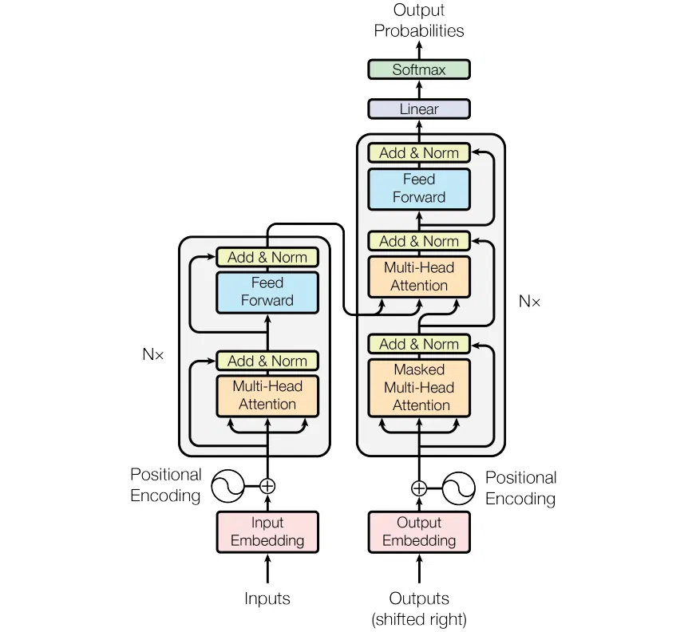
以下是结构简图，Transformer 中 Encoder 部分有 6 个 Encoder Block，同样 Decoder 部分有 6 个 Decoder Block。
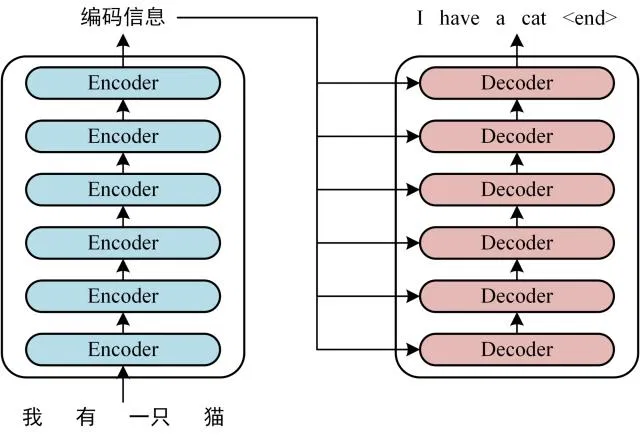
# Embedding
模型无法直接处理文本、ID 等离散符号。Embedding 层的作用就像一个 “翻译官”，将这些符号转换为数值化的向量。
它本质上是一个可训练的 “查找表”（Lookup Table）。这个表是一个巨大的矩阵，其行数等于词汇表大小（vocab_size），列数等于预设的向量维度（embedding_dim，如 512 或 768）。
工作流程：
1. 输入的文本首先被分词器（Tokenizer）转换成一串整数 ID。
2.Embedding 层根据这些 ID，从矩阵中查找并取出对应的行向量，即下图中的 词 Embedding。
Transformer 模型本身不具备处理序列顺序的能力（因为它可以并行处理整个序列），因此需要显式地注入位置信息。
为了告诉模型每个 token 在序列中的先后顺序，会为每个位置的 Embedding 向量加上一个专门表示位置的向量，即 “位置编码”（Positional Encoding）即下图中的 位置 Embedding.
位置 Embedding 用 PE 表示，PE 的维度与单词 Embedding 是一样的。PE 可以通过训练得到，也可以使用某种公式计算得到。在 Transformer 中采用了后者，计算公式如下：
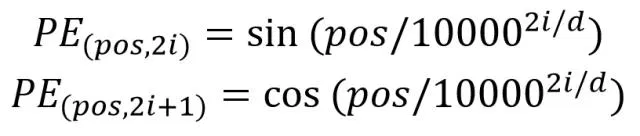
其中，pos 表示单词在句子中的位置，d 表示 PE 的维度 (与词 Embedding 一样)，2i 表示偶数的维度，2i+1 表示奇数维度 (即 2i≤d, 2i+1≤d)。
所以最终输入向量 = 词 Embedding + 位置 Embedding。
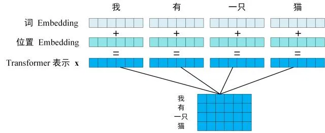
以下代码用来计算 Transformer 的输入 Embedding，代码来自 Pytorch 版本的 Transformer 实现：
class PositionalEncoding(nn.Module): | |
""" | |
compute sinusoid encoding. | |
""" | |
def __init__(self, d_model, max_len, device): | |
""" | |
constructor of sinusoid encoding class | |
:param d_model: dimension of model | |
:param max_len: max sequence length | |
:param device: hardware device setting | |
""" | |
super(PositionalEncoding, self).__init__() | |
# same size with input matrix (for adding with input matrix) | |
self.encoding = torch.zeros(max_len, d_model, device=device) | |
self.encoding.requires_grad = False # we don't need to compute gradient | |
pos = torch.arange(0, max_len, device=device) | |
pos = pos.float().unsqueeze(dim=1) | |
# 1D => 2D unsqueeze to represent word's position | |
_2i = torch.arange(0, d_model, step=2, device=device).float() | |
# 'i' means index of d_model (e.g. embedding size = 50, 'i' = [0,50]) | |
# "step=2" means 'i' multiplied with two (same with 2 * i) | |
self.encoding[:, 0::2] = torch.sin(pos / (10000 ** (_2i / d_model))) | |
self.encoding[:, 1::2] = torch.cos(pos / (10000 ** (_2i / d_model))) | |
# compute positional encoding to consider positional information of words | |
def forward(self, x): | |
# self.encoding | |
# [max_len = 512, d_model = 512] | |
batch_size, seq_len = x.size() | |
# [batch_size = 128, seq_len = 30] | |
return self.encoding[:seq_len, :] | |
# [seq_len = 30, d_model = 512] | |
# it will add with tok_emb : [128, 30, 512] |
# Encoder
Encoder 部分包含 6 个 Encoder Block，下一个 Encoder Block 的输入是上一个 Encoder Block 的输出。下图为 Encoder 示意图。其中 Transformer 中 N 取值为 6，也就是有连续的 6 个 Encoder Block。
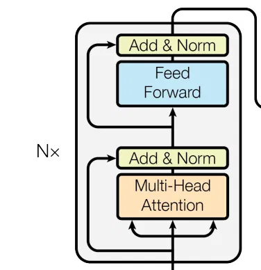
从示意图中可以看到，其包含两个部分 ： Multi-Head Attention + Add & Norm 部分 和 Feed Forward + Add & Norm 部分。两个部分都有残差结构。
下面分别介绍：
# Multi-Head Attention
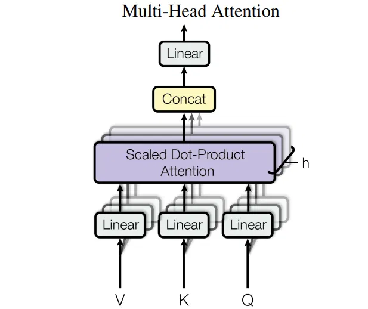
上图可以看到 Multi-Head Attention 包含 h （Transformer 为 8）个 Self-Attention 层（Q、K、V 为输入，经 Linear 和 Scaled Dot-Product Attention 得到 Z），首先将输入 X 分别传递到 h 个不同的 Self-Attention 中，计算得到 h 个输出矩阵 Z。
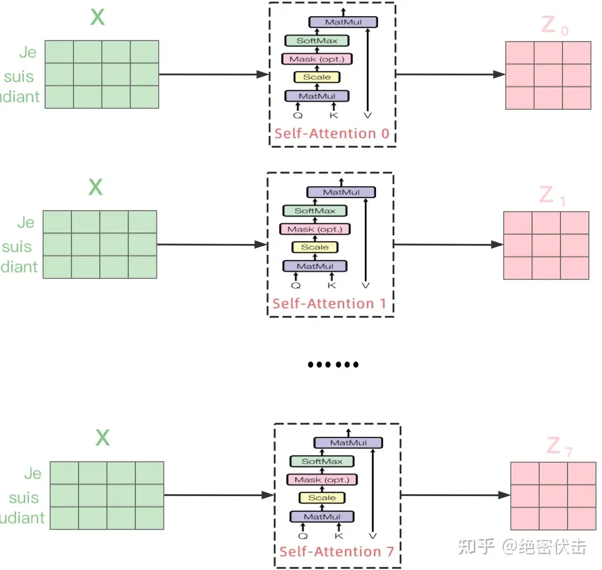
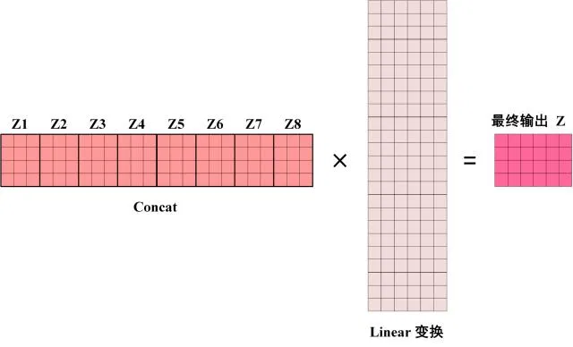
上图展示了 8 个 Self-Attention 的输出 Z1 到 Z8，然后 Concat 一起，经线性变换得到最终的输出 Z。
class MultiHeadAttention(nn.Module): | |
def __init__(self, d_model, n_head): | |
super(MultiHeadAttention, self).__init__() | |
self.n_head = n_head | |
self.attention = ScaleDotProductAttention() | |
self.w_q = nn.Linear(d_model, d_model) | |
self.w_k = nn.Linear(d_model, d_model) | |
self.w_v = nn.Linear(d_model, d_model) | |
self.w_concat = nn.Linear(d_model, d_model) | |
def forward(self, q, k, v, mask=None): | |
# 1. dot product with weight matrices | |
q, k, v = self.w_q(q), self.w_k(k), self.w_v(v) | |
# 2. split tensor by number of heads | |
q, k, v = self.split(q), self.split(k), self.split(v) | |
# 3. do scale dot product to compute similarity | |
out, attention = self.attention(q, k, v, mask=mask) | |
# 4. concat and pass to linear layer | |
out = self.concat(out) | |
out = self.w_concat(out) | |
# 5. visualize attention map | |
# TODO : we should implement visualization | |
return out | |
def split(self, tensor): | |
""" | |
split tensor by number of head | |
:param tensor: [batch_size, length, d_model] | |
:return: [batch_size, head, length, d_tensor] | |
""" | |
batch_size, length, d_model = tensor.size() | |
d_tensor = d_model // self.n_head | |
tensor = tensor.view(batch_size, length, self.n_head, d_tensor).transpose(1, 2) | |
# it is similar with group convolution (split by number of heads) | |
return tensor | |
def concat(self, tensor): | |
""" | |
inverse function of self.split(tensor : torch.Tensor) | |
:param tensor: [batch_size, head, length, d_tensor] | |
:return: [batch_size, length, d_model] | |
""" | |
batch_size, head, length, d_tensor = tensor.size() | |
d_model = head * d_tensor | |
tensor = tensor.transpose(1, 2).contiguous().view(batch_size, length, d_model) | |
return tensor |
下面介绍单个 Self-Attention 的结构。
# Self-Attention
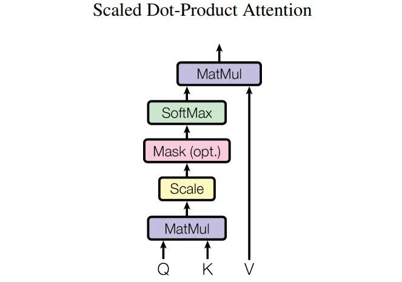
Self-Attention 的输入向量是 Q (查询)、 K (键值)、 V (值), 而 Q (查询)、 K (键值)、 V (值) 是由前述介绍的最终输入向量 X 得到的，最终输入向量 X = 词 Embedding + 位置 Embedding。
先看 X 如何得到 Q、K、V。
如图所示，Q、K、V 由输入 X 与三个不同的权重矩阵相乘得到。
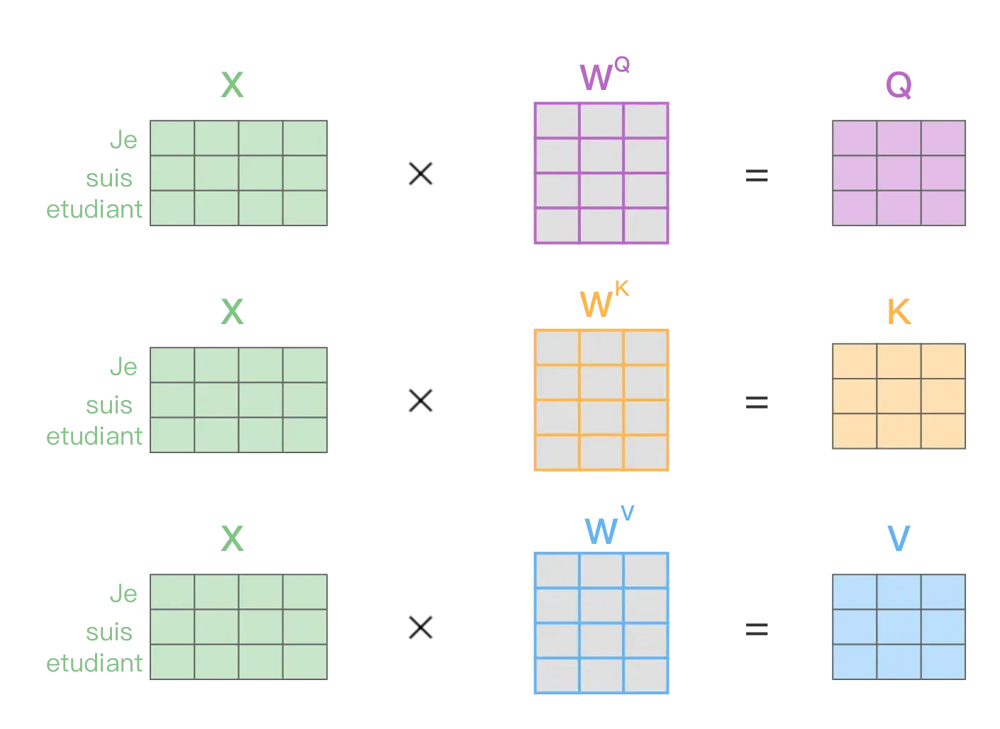
得到 Q、K、V 之后就可以计算出 Self-Attention 的输出，如下图所示：
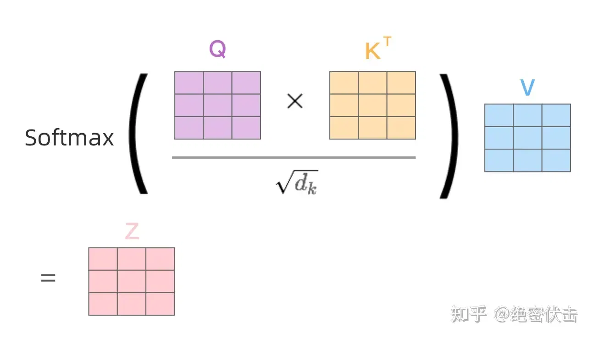
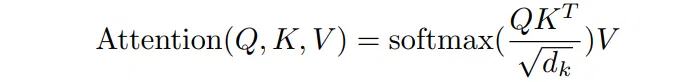
class ScaleDotProductAttention(nn.Module): | |
""" | |
compute scale dot product attention | |
Query : given sentence that we focused on (decoder) | |
Key : every sentence to check relationship with Qeury(encoder) | |
Value : every sentence same with Key (encoder) | |
""" | |
def __init__(self): | |
super(ScaleDotProductAttention, self).__init__() | |
self.softmax = nn.Softmax(dim=-1) | |
def forward(self, q, k, v, mask=None, e=1e-12): | |
# input is 4 dimension tensor | |
# [batch_size, head, length, d_tensor] | |
batch_size, head, length, d_tensor = k.size() | |
# 1. dot product Query with Key^T to compute similarity | |
k_t = k.transpose(2, 3) # transpose | |
score = (q @ k_t) / math.sqrt(d_tensor) # scaled dot product | |
# 2. apply masking (opt) | |
if mask is not None: | |
score = score.masked_fill(mask == 0, -10000) | |
# 3. pass them softmax to make [0, 1] range | |
score = self.softmax(score) | |
# 4. multiply with Value | |
v = score @ v | |
return v, score |
# Feed Forward
Feed Forward 前馈网络， 结构简单，是两个全连接层。
class PositionwiseFeedForward(nn.Module): | |
def __init__(self, d_model, hidden, drop_prob=0.1): | |
super(PositionwiseFeedForward, self).__init__() | |
self.linear1 = nn.Linear(d_model, hidden) | |
self.linear2 = nn.Linear(hidden, d_model) | |
self.relu = nn.ReLU() | |
self.dropout = nn.Dropout(p=drop_prob) | |
def forward(self, x): | |
x = self.linear1(x) | |
x = self.relu(x) | |
x = self.dropout(x) | |
x = self.linear2(x) | |
return x |
# Add & Norm
Add & Norm 层由 Add 和 Norm 两部分组成，包含残差接结构，其计算公式如下:
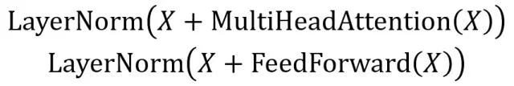
class LayerNorm(nn.Module): | |
def __init__(self, d_model, eps=1e-12): | |
super(LayerNorm, self).__init__() | |
self.gamma = nn.Parameter(torch.ones(d_model)) | |
self.beta = nn.Parameter(torch.zeros(d_model)) | |
self.eps = eps | |
def forward(self, x): | |
mean = x.mean(-1, keepdim=True) | |
var = x.var(-1, unbiased=False, keepdim=True) | |
# '-1' means last dimension. | |
out = (x - mean) / torch.sqrt(var + self.eps) | |
out = self.gamma * out + self.beta | |
return out |
# Decoder
Decoder block 结构，与 Encoder block 相似，但是存在一些区别：
包含两个 Multi-Head Attention 层。
第一个 Multi-Head Attention 层采用了 Masked 操作。
第二个 Multi-Head Attention 层的 K, V 矩阵使用 Encoder 的编码信息矩阵 C 进行计算，而 Q 使用上一个 Decoder block 的输出计算。
最后有一个 Softmax 层计算下一个翻译单词的概率。

class DecoderLayer(nn.Module): | |
def __init__(self, d_model, ffn_hidden, n_head, drop_prob): | |
super(DecoderLayer, self).__init__() | |
self.self_attention = MultiHeadAttention(d_model=d_model, n_head=n_head) | |
self.norm1 = LayerNorm(d_model=d_model) | |
self.dropout1 = nn.Dropout(p=drop_prob) | |
self.enc_dec_attention = MultiHeadAttention(d_model=d_model, n_head=n_head) | |
self.norm2 = LayerNorm(d_model=d_model) | |
self.dropout2 = nn.Dropout(p=drop_prob) | |
self.ffn = PositionwiseFeedForward(d_model=d_model, hidden=ffn_hidden, drop_prob=drop_prob) | |
self.norm3 = LayerNorm(d_model=d_model) | |
self.dropout3 = nn.Dropout(p=drop_prob) | |
def forward(self, dec, enc, trg_mask, src_mask): | |
# 1. compute self attention | |
_x = dec | |
x = self.self_attention(q=dec, k=dec, v=dec, mask=trg_mask) | |
# 2. add and norm | |
x = self.dropout1(x) | |
x = self.norm1(x + _x) | |
if enc is not None: | |
# 3. compute encoder - decoder attention | |
_x = x | |
x = self.enc_dec_attention(q=x, k=enc, v=enc, mask=src_mask) | |
# 4. add and norm | |
x = self.dropout2(x) | |
x = self.norm2(x + _x) | |
# 5. positionwise feed forward network | |
_x = x | |
x = self.ffn(x) | |
# 6. add and norm | |
x = self.dropout3(x) | |
x = self.norm3(x + _x) | |
return x |
class Decoder(nn.Module): | |
def __init__(self, dec_voc_size, max_len, d_model, ffn_hidden, n_head, n_layers, drop_prob, device): | |
super().__init__() | |
self.emb = TransformerEmbedding(d_model=d_model, | |
drop_prob=drop_prob, | |
max_len=max_len, | |
vocab_size=dec_voc_size, | |
device=device) | |
self.layers = nn.ModuleList([DecoderLayer(d_model=d_model, | |
ffn_hidden=ffn_hidden, | |
n_head=n_head, | |
drop_prob=drop_prob) | |
for _ in range(n_layers)]) | |
self.linear = nn.Linear(d_model, dec_voc_size) | |
def forward(self, trg, src, trg_mask, src_mask): | |
trg = self.emb(trg) | |
for layer in self.layers: | |
trg = layer(trg, src, trg_mask, src_mask) | |
# pass to LM head | |
output = self.linear(trg) | |
return output |
Decoder 的第一个 Multi-Head Attention 采用了 Masked 操作，因为在翻译的过程中是顺序翻译的，即翻译完第 i 个单词，才可以翻译第 i+1 个单词。通过 Masked 操作可以防止第 i 个单词知道 i+1 个单词之后的信息。下面以法语 "Je suis etudiant" 翻译成英文 "I am a student" 为例，了解一下 Masked 操作。
在 Decoder 的时候，需要根据之前翻译的单词，预测当前最有可能翻译的单词，如下图所示。首先根据输入 "<Begin>" 预测出第一个单词为 "I"，然后根据输入 "<Begin> I" 预测下一个单词 "am"。
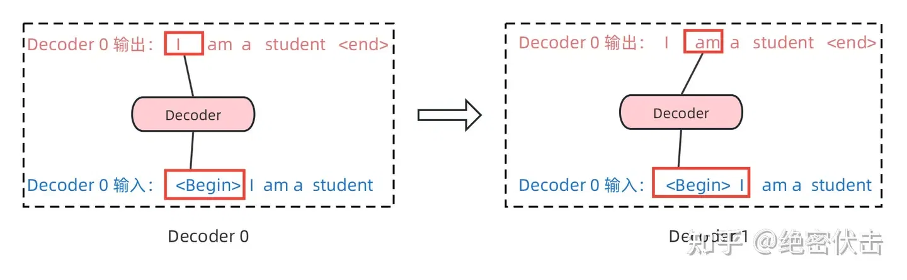
Decoder 在预测第 i 个输出时，需要将第 i+1 之后的单词掩盖住，Mask 操作是在 Self-Attention 的 Softmax 之前使用的，下面以前面的 "I am a student" 为例。
第一步：是 Decoder 的输入矩阵和 Mask 矩阵，输入矩阵包含 "<Begin> I am a student"4 个单词的表示向量，Mask 是一个 4 * 4 的矩阵。在 Mask 可以发现单词 "<Begin>" 只能使用单词 "<Begin>" 的信息，而单词 "I" 可以使用单词 "<Begin> I" 的信息，即只能使用之前的信息。
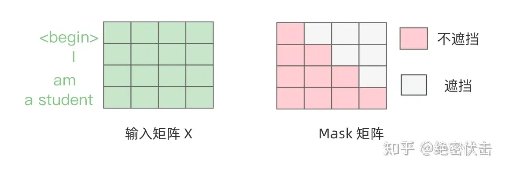
第二步：接下来的操作和之前 Encoder 中的 Self-Attention 一样，只是在 Softmax 之前需要进行 Mask 操作。
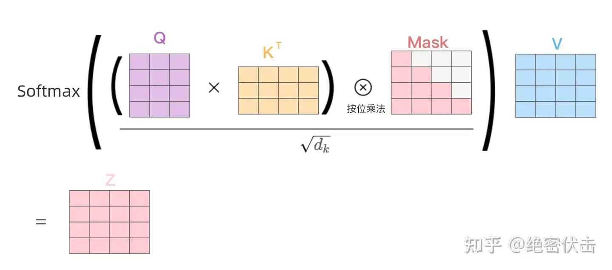
第三步：通过上述步骤就可以得到一个 Mask Self-Attention 的输出矩阵 Z，然后和 Encoder 类似，通过 Multi-Head Attention 拼接多个输出 Z 然后计算得到第一个 Multi-Head Attention 的输出 Z, Z 与输入 X 维度一样。
# 最终输出
编码器 Decoder 最后的部分是利用 Softmax 预测下一个单词，在 Softmax 之前，会经过 Linear 变换，将维度转换为词表的个数。
# 后记
本博客目前以及可预期的将来都不会支持评论功能。各位大侠如若有指教和问题，可以在我的 github 项目 或随便一个项目下提出 issue，并指明哪一篇博客，看到一定及时回复！